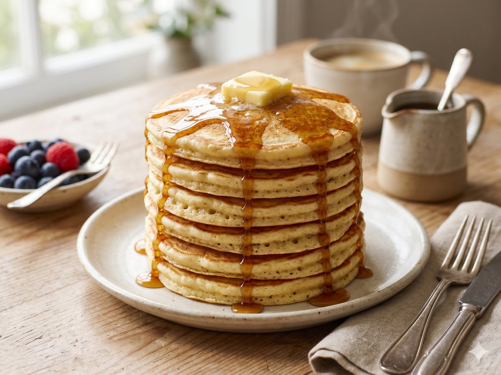

Fluffy Buttermilk Pancakes
Tall, tender stacks worth waking up for.
25 min · Serves 4 · Mise Kitchen

Ingredients
- 2 cups flour
- 2 tablespoons sugar
- 2 teaspoons baking powder
- 1/2 teaspoon baking soda
- 1/2 teaspoon salt
- 2 cups buttermilk
- 2 eggs
- 3 tablespoons melted butter
Directions
- Whisk the flour, sugar, baking powder, baking soda, and salt together.
- In another bowl, whisk the buttermilk, eggs, and melted butter.
- Stir the wet into the dry until just combined; a few lumps are fine.
- Cook 1/4-cup portions on a buttered griddle until bubbles form, then flip and cook through.
An original recipe from Mise Kitchen. Free to save and cook.